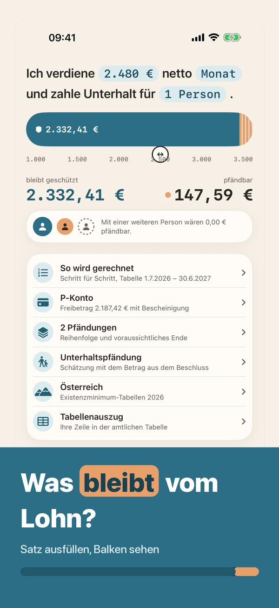
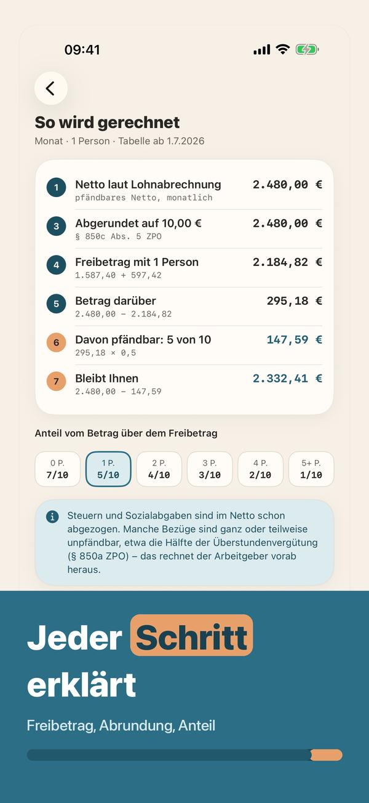
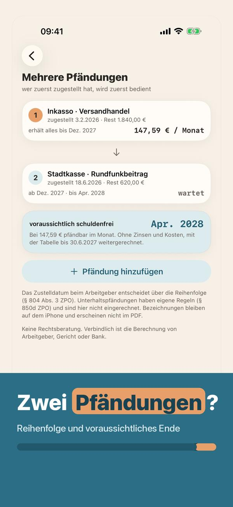

Pfändix – Pfändungsrechner
P-Konto und Freibetrag 2026/27
Pfändix rechnet aus, welcher Teil Ihres Nettolohns bei einer Lohn- oder Kontopfändung geschützt bleibt. Sie füllen einen Satz aus – Nettolohn, Lohnzeitraum, Personen mit Unterhalt – und sehen sofort einen geteilten Balken: geschützt und pfändbar. Jeder Rechenschritt ist erklärt, in ruhiger, verständlicher Sprache. Für Deutschland mit der Tabelle ab 1. Juli 2026, für Österreich mit den amtlichen Existenzminimum-Tabellen 2026.



- Pfändbarer Betrag aus Nettolohn und Unterhaltspflichten, für Monat, Woche oder Tag
- Rechenweg Schritt für Schritt, mit Abrundung und Anteil
- Mehrere Pfändungen: Reihenfolge nach Zustellung und voraussichtliches Ende
- P-Konto: Freibetrag, Übertrag und Checkliste für die Bescheinigung
- Unterhaltspfändung: Schätzung mit dem Betrag aus dem Beschluss
- Österreich: Existenzminimum nach den amtlichen Tabellen 2026
- Verlauf Monat für Monat und Erinnerung zur neuen Tabelle am 1. Juli
- Zusammenfassung als PDF für Beratung und Unterlagen, erstellt auf dem iPhone
Im App Store ladenHilfe · Datenschutz